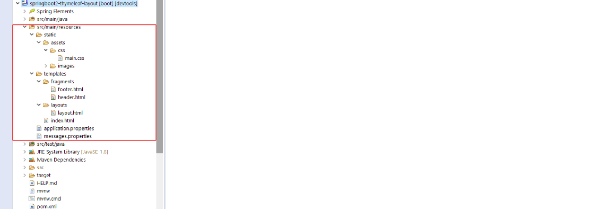

Descarga el proyecto de GitHub.
Partimos del proyecto anterior y lo vamos a mejorar con Thymeleaf Layout Dialect. Aquí la pagina oficial.
Entonces lo único que va a cambiar respecto al proyecto anterior es el Front-End. Para ello necesitamos añadir al proyecto la dependencia thymeleaf-layout-dialect.
También veremos los Webjars, que son una serie de bibliotecas del lado del cliente empaquetadas en archivos jar. Por ejemplo la biblioteca jQuery o Bootstrap.
El principal problema que WebJars resuelve es hacer que las dependencias del lado del cliente estén disponibles en Maven Central y sean utilizables en cualquier proyecto estándar de Maven.
Finalizaremos con una pequeña explicación de la herramienta DevTools.
Partimos pues del proyecto anterior y añadimos las dependencias nuevas que nos hacen falta.
<dependencies>
<dependency>
<groupId>org.springframework.boot</groupId>
<artifactId>spring-boot-starter-thymeleaf</artifactId>
</dependency>
<dependency>
<groupId>nz.net.ultraq.thymeleaf</groupId>
<artifactId>thymeleaf-layout-dialect</artifactId>
</dependency>
<dependency>
<groupId>org.springframework.boot</groupId>
<artifactId>spring-boot-starter-web</artifactId>
</dependency>
<dependency>
<groupId>org.springframework.boot</groupId>
<artifactId>spring-boot-devtools</artifactId>
<scope>runtime</scope>
<optional>true</optional>
</dependency>
<dependency>
<groupId>org.springframework.boot</groupId>
<artifactId>spring-boot-starter-test</artifactId>
<scope>test</scope>
<exclusions>
<exclusion>
<groupId>org.junit.vintage</groupId>
<artifactId>junit-vintage-engine</artifactId>
</exclusion>
</exclusions>
</dependency>
<dependency>
<groupId>org.webjars</groupId>
<artifactId>bootstrap</artifactId>
<version>4.1.0</version>
</dependency>
<dependency>
<groupId>org.webjars</groupId>
<artifactId>jquery</artifactId>
<version>3.4.1</version>
</dependency>
</dependencies>
Ver la del proyecto anterior
Ver el del proyecto anterior
Ver el del proyecto anterior
Vamos a ver la estructura del proyecto centrandonos en la vista:
Destacamos dos cosas; la desaparición de jquery y bootstrap. Como decía en la introducción, los tenemos como archivos jar.
Por otro lado, dentro de la carpeta templates aparte del index.html tenemos dos nuevas carpetas, layouts con un archivo layout.html y fragments con dos archivos, header.html y footer.html.
<!DOCTYPE html>
<html
xmlns="http://www.w3.org/1999/xhtml"
xmlns:th="http://www.thymeleaf.org"
xmlns:layout="http://www.ultraq.net.nz/thymeleaf/layout">
<head>
<meta charset="utf-8" />
<meta http-equiv="X-UA-Compatible" content="IE=edge" />
<title layout:title-pattern="$DECORATOR_TITLE - $CONTENT_TITLE">SpringBootThymeleaf</title>
<meta
content="width=device-width, initial-scale=1, maximum-scale=1, user-scalable=no"
name="viewport" />
<link rel="stylesheet" type="text/css" href="webjars/bootstrap/4.1.0/css/bootstrap.min.css" />
<link rel="stylesheet" type="text/css" href="webjars/jquery/3.4.1/jquery.min.css" />
<link rel="stylesheet" type="text/css" th:href="@{/assets/css/main.css}"/>
</head>
<body>
<!--header.html that's here -->
<header>
<div th:replace="fragments/header :: header"></div>
</header>
<div class="container">
<div layout:fragment="content">
<!-- Your Page Content Here -->
</div>
</div>
<!--footer.html that's here -->
<footer>
<div th:replace="fragments/footer :: footer"></div>
</footer>
<!-- JS -->
<script type="text/javascript" src="/webjars/bootstrap/4.1.0/js/bootstrap.min.js"></script>
<script type="text/javascript" src="/webjars/jquery/3.4.1/jquery.min.js"></script>
<!-- jquery -->
<script>
$(document).ready(function() {
// ..code
});
</script>
</body>
</html>
Normalmente los sitios web comparten componentes comunes de la página como el encabezado, el pie de página, el menú y posiblemente muchos más. Estos componentes de la página pueden ser utilizados por los mismos o diferentes diseños.
<header th:fragment="header" xmlns:th="http://www.w3.org/1999/xhtml">
<!-- Static navbar -->
<nav class="navbar navbar-expand-lg navbar-light bg-light">
<img alt="logo" th:src="@{/assets/images/spring_50x50.png}">
<button class="navbar-toggler" type="button" data-toggle="collapse" data-target="#navbarSupportedContent" aria-controls="navbarSupportedContent" aria-expanded="false" aria-label="Toggle navigation">
<span class="navbar-toggler-icon"></span>
</button>
<div class="collapse navbar-collapse" id="navbarSupportedContent">
<ul class="navbar-nav mr-auto">
<li class="nav-item active">
<a class="nav-link" href="#">Home <span class="sr-only">(current)</span></a>
</li>
<li class="nav-item">
<a class="nav-link" href="#">Link</a>
</li>
<li class="nav-item dropdown">
<a class="nav-link dropdown-toggle" href="#" id="navbarDropdown" role="button" data-toggle="dropdown" aria-haspopup="true" aria-expanded="false">
Dropdown
</a>
<div class="dropdown-menu" aria-labelledby="navbarDropdown">
<a class="dropdown-item" href="#">Action</a>
<a class="dropdown-item" href="#">Another action</a>
<div class="dropdown-divider"></div>
<a class="dropdown-item" href="#">Something else here</a>
</div>
</li>
<li class="nav-item">
<a class="nav-link disabled" href="#">Disabled</a>
</li>
</ul>
<form class="form-inline my-2 my-lg-0">
<input class="form-control mr-sm-2" type="search" placeholder="Search" aria-label="Search">
<button class="btn btn-outline-success my-2 my-sm-0" type="submit">Search</button>
</form>
</div>
</nav>
<!-- header -->
<div class="container">
<div class="row">
<div class="col-lg-12" align="center">
<img alt="logo" th:src="@{/assets/images/logo.png}">
</div>
</div>
</div>
</header>
Todas las páginas web de mi sitio (supongamos que esto es un proyecto serio y tiene muchas vistas) comparten la misma cabecera
<div th:fragment="footer" class="footer" xmlns:th="http://www.w3.org/1999/xhtml">
<div class="container">
<span th:text="#{text.footer}" class="text-muted">App footer</span>
</div>
</div>
Igual que la cabecera, el pie es compartido por todas mis páginas.
<!DOCTYPE html>
<html
xmlns="http://www.w3.org/1999/xhtml"
xmlns:th="http://www.thymeleaf.org"
xmlns:layout="http://www.ultraq.net.nz/thymeleaf/layout"
layout:decorator="fragments/layout">
<head>
<title>index :: spring-thymeleaf</title>
</head>
<body>
<!-- body -->
<div layout:fragment="content">
<div class="container-fluid" align="center"> <!-- main container -->
<h1 th:text="#{text.title}"></h1>
<p style="margin-top:100px;"><span th:text="${myModel.now}"></span>, <span th:text="${myModel.date}"></span></p>
</div> <!-- /main container -->
</div>
</body>
</html>
Declaramos que el index usa el "layout" layout.html.
Un problema que tenemos con Spring Boot es que si cambiamos el código fuente el servicio no se actualizará, tendremos que parar el servidor y volverlo a arrancar para que el nuevo código funcione.
Spring Boot DevTools es la herramienta de Spring Boot que nos permite reiniciar de forma automática nuestras aplicaciones cada vez que se produce un cambio en nuestro código. Por lo que a partir de ahora todos nuestros proyectos con Spring Boot incorporaran esta herramienta.